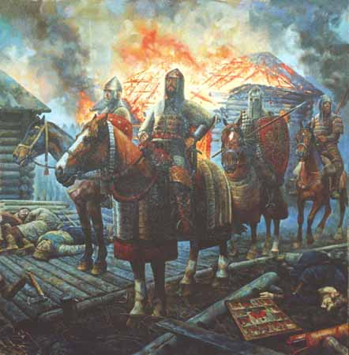
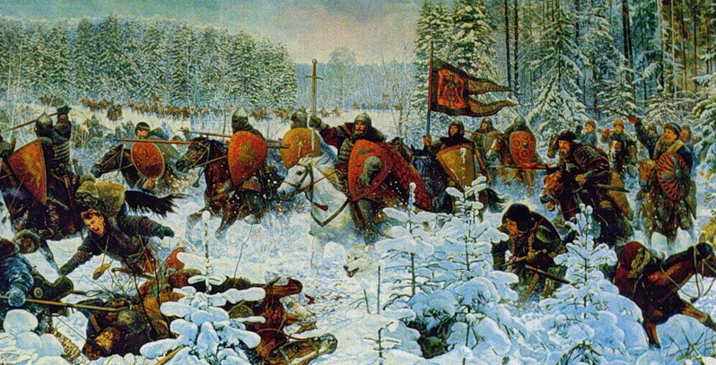

http://aquilaaquilonis.livejournal.com/358950.html
aquilaaquilonis
Тверь, Орда и Литва против Москвы и Новгорода (о чём никогда не напишут Широпаевы)

На картине художника Николая Белова «Пожар Торжка» изображён разгром этого новгородского города войсками тверского князя Михаила Александровича 31 мая 1372 г. Это один из двух малоизвестных эпизодов борьбы между тверскими и московскими князьями, центром которых оказался Торжок.
В 1313 г. на золотоордынский престол вступил новый хан Узбек. Михаил Ярославич Тверской, лишь в предыдущем году вернувшийся из Орды с великокняжеским ярлыком от хана Тохты, вынужден был вновь отправиться в Сарай за подтверждением своих полномочий. Князь Юрий Данилович Московский решил воспользоваться его отсутствием, чтобы утвердить свою власть в Новгороде. В 1314 г. он послал туда князя Фёдора Ржевского, который схватил наместников Михаила. Новгородцы во главе с Фёдором двинулись к Волге, навстречу им выступил из Твери сын великого князя Дмитрий Михайлович. Противники простояли друг против друга до наступления заморозков, после чего был заключён мир, по которому Новгород перешёл к Юрию:
Посемь докончаша съ Дмитриемь миръ, и оттоле послаша по князя Юрья на Москву, на всеи воли новгородскои; а сами възвратишася в Новъгород. Тои же зимы, пред великымь заговениемь, приеха князь Юрьи в Новъгород на столъ съ братомь Афанасьемь; и ради быша новгородци своему хотению.
Новгородская I летопись. ПСРЛ. Т. 3, стр. 94
Захват Новгорода вопреки великокняжескому ярлыку Михаила Ярославича Тверского был прямым вызовом Орде. Обеспокоенный им хан Узбек вызвал Юрия Даниловича к себе. Вместе с московским князем, оставившим наместником в Новгороде своего брата Афанасия, в Орду отправились и представители новгородского боярства, чтобы поддержать его в борьбе за новгородский и владимирский столы:
Въ лето 6823 (1315) поиде въ орду изъ Новагорода изъ Великаго князь Юрьи съ Новогородци, а князя Афанасиа оставилъ въ Новегороде.
Симеоновская летопись. ПСРЛ. Т. 18, стр. 87
Великим князем Владимирским, а тем самым и князем Новгорода, Узбек признал Михаила Ярославича. Осенью 1315 г. тверской князь вернулся на Русь в сопровождении татарского отряда. Новгородцы вновь отказались признать его власть и выступили ему навстречу во главе с князем Афанасием Даниловичем. 10 февраля 1316 г. под Торжком состоялось знаменательное сражение:
Того же лета поиде князь Михаило изъ Орды в Русь, ведыи с собою Татары, оканьнаго Таитемеря. Услышавше же новгородци съ княземь Афанасьемь, изидоша к Торжку и пребыша ту съ 6 недель, весть переимаюче. Тогда же поиде князь Михаило со всею Низовьскою землею и с Татары к Торжку; новгородци же съ княземь Афанасьемь и с новоторжци изидоша противу на поле. Бысть же то попущениемь божиемь: съступившема бо ся полкома обема, бысть сеча зла, и створися немало зла, избиша много добрыхъ муж и бояръ новгородскыхъ: ту убиша Андрея Климовича, Юрья Мишинича, Михаила Павшинича, Силвана, Тимофея Андреянова сына тысяцьского, Онанью Мелуева, Офонаса Романовича и купець добрыхъ много, а иныхъ новгородцевъ и новоторжьцевъ богъ весть; а инии останокъ вбегоша в город и затворишася в городе с княземь Афанасьемь.
Новгородская I летопись. ПСРЛ. Т. 3, стр. 94
Хотя московско-новгородское войско и было разбито, Торжковская битва 1316 г. заслуживает места в русской исторической памяти во всяком случае не меньшего, чем Бортеневская битва 1317 г. Князь Афанасий Данилович Московский не побоялся сразиться против приехавшего из Орды с великокняжеским ярлыком Михаила Ярославича Тверского и сопровождавшего его татарского отряда. В этом он проявил себя как достойный сын Даниила Александровича, неоднократно выступавшего против татар с оружием в руках.
Подступив к Торжку, Михаил потребовал в обмен на заключение мира выдать ему князей Афанасия Даниловича и Фёдора Ржевского, но получил отказ. Тогда Михаил потребовал выдать одного Фёдора, на что новгородцы согласились. Стороны целовали крест в знак примирения, однако сразу же после этого тверской князь обманом захватил Афанасия Даниловича и новгородских бояр и отправил их в Тверь заложниками, а оставшихся в Торжке новгородцев и новоторжцев разоружил и стал вымогать с них выкуп:
И по миру князь Михаило призва к собе князя Афанасья и бояры новгородскыи, и изъима ихъ, и посла на Тферь в тали, а останокъ людии в городе нача продаяти, колико кого станеть, а снасть отъима у всехъ.
Новгородская I летопись. ПСРЛ. Т. 3, стр. 95
Новгородцам пришлось принять к себе наместников тверского князя, однако в том же году они вновь были изгнаны и Новгород вновь признал власть Юрия Даниловича Московского. Тем временем Юрий получил в Орде великокняжеский ярлык. Что побудило Узбека передать ярлык московскому князю, позволявшему себе открытое неповиновение ордынским властям? По-видимому, существенную (если не решающую) роль сыграли деньги сопровождавших Юрия новгородцев. Косвенно на это указывает Житие Михаила Тверского:
И бывшю ему [Юрию Даниловичу] в Орде, не хотя роду человечю добра, всепагубныи врагъ дьяволъ вложи въ сердце княземъ татарскым, свадиша братию, ркуще великому князю Юрью Даниловичю: «Оже ты даси выходъ болшии князя Михаила тферьскаго, мы тобе великое княжение дадим». И тако превратиша сердце его искати великого княжения, обычаи бо поганых и до сех местъ, вмещуще вражду межу братьи, князеи рускых, и собе болшая дары взимааху. Софийская I летопись старшего извода.
ПСРЛ. Т. 6, вып. 1, стр. 376-377
В конце 1317 г. Юрий Данилович вернулся на Русь в сопровождении татарского посла Кавгадыя. Возле Костромы он встретился с Михаилом Ярославичем, который после переговоров признал переход великого княжения к Юрию и уехал в Тверь. Однако после этого Юрий с Кавгадыем вторглись в пределы Тверского княжества и стали его разорять. Видимо, причиной этому послужило желание Юрия Даниловича отомстить за такие же действия тверского князя, который после возвращения из Орды в 1305 г. вторгся с татарской ратью на земли Московского княжества. Михаил Ярославич пытался остановить разорение своих владений путем переговоров, однако они ни к чему не привели. Тверской князь вынужден был оказать вооруженное сопротивление. 22 декабря 1317 г. у села Бортенева состоялась битва, в которой войска Юрия были полностью разгромлены.

На картине Николая Белова «Бортеневская битва» нет татар, что соответствует исторической действительности. Участие татар в Бортеневской битве не упоминается ни в одном источнике. Наиболее подробно эти события описаны тверским летописцем:
И поиде Кавгадый къ Волзе, и Юрый князь, и вси князи Суздалстии, и сташа на переизде у Волги. Великий же князь Михайло съвокупися, и мужи Тверичи и Кашинци поидоша противу Юрию, а Юрий опльчися противу; и ступишася обои, и бысть сеча велика, и пособи Богъ великому князю Михаилу Ярославичу, и много ихъ избиша; а князи мно(ги) руками поимаша и приведоша въ Тверь, и княгыню Юрию Кончака, а Юрий князь бежа въ Новгородъ Великий въ мале дружины, а Кавгадый повеле дружине своей стяги поврещи, а самъ поиде не люба а въ стани.
Тверская летопись. ПСРЛ. Т. 15, стб. 409-410
То, что Кавгадый приказал своим воинам свернуть стяги и спокойно отправился в стан, когда войско Юрия находилось в беспорядочном бегстве, свидетельствует о неучастии татар в битве. Под Бортеневым Михаил Ярославич Тверской разгромил объединённые силы суздальских князей во главе с Юрием Даниловичем Московским. Новгородцы не приняли участия в битве только потому, что были разбиты тверичами ещё до того, как успели присоединиться к Юрию:
Въ тоже время приидоша Новгородци въ Торжекъ на великого же князя Михаила въ помощь Юрию князю и стояша 6 недель въ Торжку, съсылающеся съ Юриемъ княземъ, сърекаа срокъ, како поити Юрию князю отъ Волока, а Новгородцемъ отъ Торжьку. И выидоша Новогородци ис Торжку, почаша воевати по рубежу, а великии князь Михаилъ, не дождавъ срока ихъ, поиде противу имъ и бысть поторжьца не мала, оубиша Новогородцевъ 200 и почаша слатися къ великому князю съ челобитиемъ и въземше миръ поидоша въ Новъгородъ. Рогожский летописец.
ПСРЛ. Т. 15, вып. 1, стб. 37
Нет никаких оснований рассматривать Бортеневскую битву как проявление антиордынской политики Твери и проордынской политики Москвы. Годом раньше тверские и московские князья выступали в зеркально противоположных ролях: «Торжок является своего рода аналогом Бортенева: как и год спустя, великий князь владимирский с “сильным” татарским послом идёт на князя-соперника (отличие состояло в том, что ситуация для Москвы в 1316 г. была более драматичной в силу того, что главный московский князь, Юрия, находился в это время при ханском дворе на положении фактического заложника)» (А.А. Горский. Москва и Орда. М., 2000, стр. 56-59).
Под Бортеневым татары не сражались на стороне москвичей, в то время как годом раньше под Торжком они сражались против москвичей и новгородцев на стороне тверского князя (во всяком случае, летописный рассказ этого не исключает). Деяния, в которых зачастую обвиняют Юрия Даниловича Московского, были ответом на такие же деяния, ранее совершённые Михаилом Ярославичем Тверским против своих противников.
***
Спустя несколько десятилетий Торжок вновь оказался в центре московско-тверского противостояния. 31 мая 1372 г. его подверг жестокому разгрому тверской князь Михаил Александрович – внук Михаила Ярославича, о котором шла речь выше. Это произошло в ходе войны, которую Тверь и Литва вели против Москвы и союзного ей Новгорода. Война началась в 1367 г., когда Дмитрий Иванович Московский оказал поддержку князю Василию Михайловичу Кашинскому, боровшемуся за тверской стол со своим племянником Михаилом Александровичем. В 1368 и 1370 г. союзник Михаила Ольгерд дважды безуспешно осаждал Москву.
Война вспыхнула с новой силой весной 1372 г. В апреле тверская рать захватила Дмитров, а литовцы во главе с Кейстутом и Андреем Полоцким разорили окрестности Переяславля и Новоторжскую волость. Тем временем жители Торжка вместе с приехавшими в город новгородскими боярами изгнали наместников тверского князя. В ответ на это Михаил Александрович выступил с войском к Торжку и после провала переговоров разбил войско новгородцев и новоторжцев и разгромил город. Вот как об этом рассказывает тверской летописец:
Того же лета, заговевъ Петрову говению, приехаша Новогородци въ Торжекъ и оукрепишася съ Новоторжьци крестнымъ целованием[ъ] заодинъ и съвещаша золъ съветъ и заратишася съ княземъ съ великимъ съ Михаиломъ съ Александровичемъ, наместника его съслаша, а Тферичь изнимаша и биша, а лодьи ихъ пограбиша. <…> Князь же великии Михаило Александрович[ь] оукреплься силою крестною и възложи упование на Бога и на пречистую Матерь и на помощь великаго архангела Михаила, съвокупя съ собою Тферьскую силу и иде ратию къ Торжьку, месяца маиа въ 31 день, на память святаго мученика Еремея, въ понедельникъ ста у Тръжьку въ полъ обеда. И нача смирениемъ слати къ Новогородцемъ и къ Новотръжцемъ: кто моихъ Тферичь билъ и грабилъ, техъ ми выдаите, а язъ оу васъ не хочю ничего, а наместника моего посадите. И жда ихъ покорениа чистосердечнаго до полудни, врагъ же диаволъ вверже въ ны котору и възмяте весь градъ злобою не покоритися князю великому Михаилу, спусти ихъ на злое то дело на кровопролитие. И послаша съ высокомыслиемъ къ князю къ великому. А сами Новогородци съ Новоторжьци похвалишеся силою своею и мужьствомъ, въружася, выехаша изъ города битися съ княземъ съ великимъ съ Михаиломъ. И моляся великому Спасу и архангелу Михаилу на первомъ суиме победи ихъ князь великии Михаило, и воеводу ихъ убиша Александра Аввакумова съ другы. И ту видевше Новогородци смятошася страхомь и трепетомъ, овии побегоша на поле къ Новугороду, а инии назадь въ городъ. Бежащихъ многыхъ исколоша, а иныхъ бояръ Новгородскыхъ и людии много изнимавше приведоша во Тферь, зажгоша съ поля посадъ, и удари съ огнемъ ветръ силенъ на городъ и поиде огнь по всемоу городоу и погоре городъ весь и церкви каменые и древяные вси, а въ церквахъ въ каменыхъ людии моужь и женъ и младенцевъ. Тако же и въ городе на площади и по улицамъ многое множество погорело, а инии мнози бежаще изъ града отъ огня въ реце истопоша и имениа ихъ и скоты съ ними въ городе погоре, а иное ратные поимаша. А кто избежалъ изъ города отъ огня, а те не оумчали съ собою ничего же. Въ едином[ъ] часе бышет[ь] всемъ видети градъ великъ, бещисленое множество людии въ немъ, въ томъ же часе пожьже его огнь, и преложишеться въ вуглие и потомъ попелъ и развея ветръ и всуе бышет[ь] человеческое мятение, толко на месте томъ видети земля и попелъ. Рогожский летописец.
ПСРЛ. Т. 15, вып. 1, стб. 101-102
Археологические раскопки, проводившиеся в Торжке в 2005 г., подтвердили нарисованную летописцем картину массовой гибели жителей от пожара.
Тверская летопись говорит лишь о гибели новоторжцев от пожара. Московские и новгородские летописи описывают также насилия, которые совершали в Торжке воины тверского князя:
Того же лета Новогородци Великаго Новагорода бояре ехаша въ Торжекъ ставити города, съслаша съ города съ Торжьку наместниковъ княжихъ Михаиловыхъ Тферскаго. Князь же Михаило, събравъ воя многы, прииде ратью къ городу къ Торжьку и взя городъ и огнемъ пожже городъ весь, и бысть пагуба велика христианомъ, овы огнемъ погореша въ дворе надъ животы, а друзии выбежа въ церковь въ святыи Спасъ, и ту издахошася, и огнемъ изгореша много множество, инии же бежачи отъ огня въ реце во Тферци истопоша, и добрыя жены и девица видяще надъ собою лупление отъ Тферичь, а они одираху до последнеи наготы, егоже погании не творять, како те отъ срамоты и беды въ воде утопоша чернци и черници, и все до наготы излупльше. Первие же Александръ Обакуновичь стрети на поле, и ту костью паде за святыи Спасъ и за обиду Новогородцкую, и съ нимъ убиша Ивана Шаховичя, и друга его Ивана Тимофеевичя и Григориа Щебелькова, и инехъ неколико ту мужь паде, а иныя побегоша, а иныхъ изымавъ на Тферь полона, мужа и женъ, безъ числа поведоша множество, а и товара много поимаша, что ся остало отъ огня, иконнои круты и серебра много поимаша. И кто, братие, о семъ не плачется, кто ся осталъ живыхъ видевыи, како они нужную и горкую смерть подъяша, и святыи церкви пожжени и городъ весь отъинудь пустъ, еже ни отъ поганыхъ не бывало таковаго зла Торжьку. И наметаша избьеныхъ людеи мертвыхъ и изженыхъ и утоплыхъ 5 скуделницъ; а инии згорели безъ останка, а инии истопли безъ вести, а инии поплыли внизъ по Тферци. И тако взявъ Торжекъ, и огнемъ пожже, и церкви и манастыри огнемъ погореша, а товара всякого наимавъ и безчислену корысть приобрете и припровади въ свои градъ на Тферь.
Симеоновская летопись. ПСРЛ. Т. 18, стр. 113
В лето 6880 [1372]. Поихаша новгородци в Торжекъ города ставити и сослаша наместьникы Михаиловы с Торжьку; и прииде князь Михаило ратью к Торжку, пожьже город всь, и бысть пагуба велика крестияномъ: овы огнемъ погореша въ дворех над животы, а друзии бежаша въ святыи Спасъ, и ту издъхошася, и огнемъ изгореша много множество, инеи же от огня бежаци, в реце во Тферци истопоша а добрыя же жены и девица, видящи надъ собою лупление от тфериць, а они одираху до последнеи наготы, егоже и погании не творят тако, те от срамоты и беды истопошася в воде, чернци и черници все до наготы изълуплено; первее же всего Олександръ Обакунович стрети и на поле и ту костию паде за святыи Спасъ и за обиду за новгородскую, и с нимъ убиша Ивана Шаховича и другаго Ивана Тимофеевича и Григорью Щебелкова, и иных неколко ту мужь паде, а инеи побегоша, а иных изимавъ, на Тферь поведе полонъ, мужеи и женъ, бещисла множество; а и товара много поимаша, что ся осталось от огня; и иконнои круты серебра много поимаша. И кто, братье, о сем не поплачется, кто ся осталъ живых видевъ, како оне нужную и горкую смерть подъяша, и святыя церкви пожьжены, и город всь отинуд пустъ: понеже бо ни от поганых не бывало такового зла. И наметаша избиеных людии и съжьженых и истоплых 5 скуделниць, а инеи погореле без останка, а инии истопле безъ вести, поплыле внизъ по Тферци.
Новгородская I летопись младшего извода
Меньше чем через две недели после разгрома Торжка, 12 июня 1372 г., Михаил Александрович Тверской отправился вместе с Ольгердом в третий поход на Москву, закончившийся так же безрезультатно, как и первые два.
Взятые в Торжке пленные были проданы тверичами в полное рабство («одерень»). В 1375 г. после победы над Тверью Дмитрий Иванович Московский в своем докончании с Михаилом Александровичем особо оговорил их освобождение: «А как еси взял Торжек, а кто ти с(я) будет продал пословицею новоторжан одернь, или будеш(ь) серебро на ком дал пословицею, тех ти отпустити по целован(ь)ю, а грамоты дерноватыи подрати» (Духовные и договорные грамоты великих и удельных князей XIV-XVI вв. М.-Л., 1950, стр. 27).
17/09/2012
slovenorus14^ Хорошая подборка фактов, очередное опровержение русофобской лжи об "ордынской московии"! Кстати нижегородские князьки наверно ещё больше тверских в этом отношении "отличились": с конца 14 и до середины 15в. вместе при ордынской поддержке гадили Москве, а значит и делу Русской национально-освободительной борьбы.